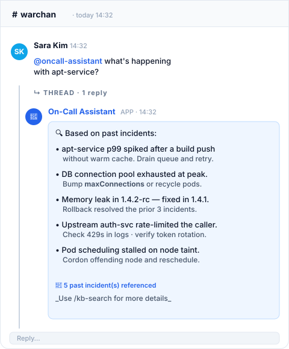
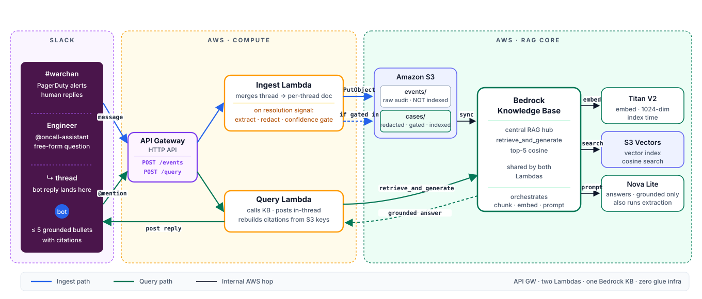

An in-thread bot that turns your Slack incident history into searchable knowledge — cuts time-to-context for on-call engineers by surfacing similar past incidents on demand. Two AWS Lambda Function URLs · one Bedrock Knowledge Base · zero glue infrastructure.
On-call engineers lose minutes scrolling threads mid-incident.
Years of incident threads — none of it findable.
The same incident gets re-diagnosed from scratch.
Slack message.channels events stream to the Ingest Lambda.
All replies on a thread are merged into one document keyed by
thread_ts, written to Amazon S3, and indexed by Bedrock KB.
An engineer mentions @oncall-assistant with a free-form question
— e.g. "what's happening with apt-service?". The Query Lambda sends it
straight to the Knowledge Base. No thread lookup, no extra Slack calls.
Bedrock KB runs cosine search over Amazon S3 Vectors, passes the top-5 retrieved chunks to Amazon Nova Lite under a strict retrieved-only · ≤ 5 bullets prompt, and posts the reply back in the same thread.


POST /events route · Idempotent on thread_ts · start_ingestion_job triggers KB sync · KB chunks then embeds via Titan V2 · resolution replies re-ingest automatically.
POST /query route · Stateless · retrieve_and_generate runs KB retrieval + Nova Lite prompt in one call · chat.postMessage posts in-thread · ≤ 5 grounded bullets.
$0.06 / GB-month$0.20 / GB (PUT) · min 128 KB/PUT$2.50 / million queries$0.004/TB (≤100K vecs) ·
$0.002/TB (100K–10M) ·
$0.0004/TB (10M+)$0.01 / GB · first 512 KB/query free$0.20 / million (1M/mo free)$0.0000166667 / GB-second (400K GB-s/mo free)~$0.023 / GB-month$0.06 / M tokens$0.24 / M tokens$0.00002 / 1K tokensS3 Vectors chosen over OpenSearch Serverless to avoid always-on idle cost.
Model: Amazon Nova Lite (not Nova 2 Lite)
Knowledge Base · no extra fee beyond embeddings, vector store & model calls
Official AWS pricing · region: us-east-2 · serverless & pay-per-use · no idle/always-on components
Sources: Amazon S3 (Vectors & Standard) · AWS Lambda · Amazon Bedrock · Amazon Nova